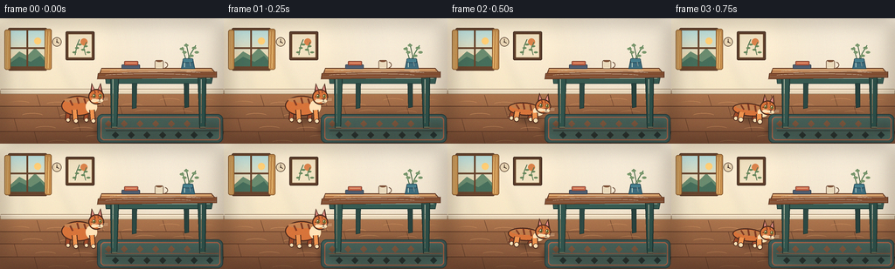
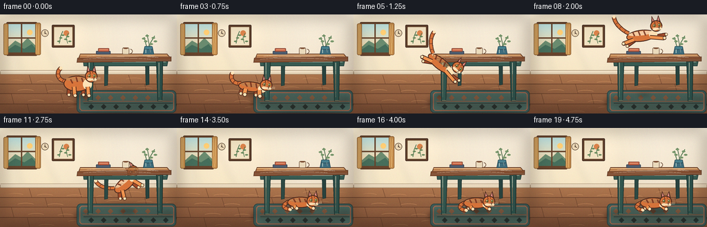
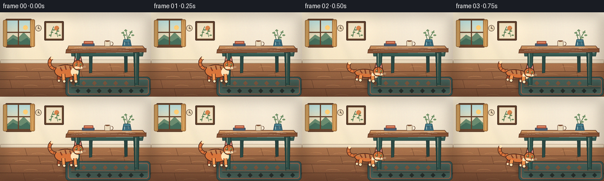

CODING AGENTS AS PIXEL WORLD MODELS
traex/DeepSeek-V4.1-Flash · dynamic_spatial_relationship_0008
点击播放 · 原生 RGB 像素
逐轮保存的候选
回放视频、检查图与代码变化。
每份候选均可单独播放。实际图片检查记录在下方工具轨迹中。
候选 01播放与检查图
点击播放 · 原生 RGB 像素

展开代码变化
--- 上一保存版本
+++ 本次保存版本
@@ -0,0 +1,623 @@
+from __future__ import annotations
+
+import math
+from pathlib import Path
+
+import numpy as np
+from PIL import Image, ImageDraw, ImageFilter
+
+import artifact_io
+
+
+CASE_DIR = Path(__file__).resolve().parent
+WIDTH = 256
+HEIGHT = 144
+FPS = 4
+FRAMES = 20
+SS = 4
+
+W = WIDTH * SS
+H = HEIGHT * SS
+
+
+def p(value: float) -> int:
+ return int(round(value * SS))
+
+
+def box(values):
+ return tuple(p(v) for v in values)
+
+
+def points(values):
+ return [(p(x), p(y)) for x, y in values]
+
+
+def rgba(color, alpha=255):
+ if len(color) == 4:
+ return color
+ return (color[0], color[1], color[2], alpha)
+
+
+def gradient_image(size, top, bottom, rng, noise=2.2):
+ width, height = size
+ t = np.linspace(0.0, 1.0, height, dtype=np.float32)[:, None, None]
+ top_arr = np.asarray(top, dtype=np.float32)[None, None, :]
+ bottom_arr = np.asarray(bottom, dtype=np.float32)[None, None, :]
+ arr = top_arr * (1.0 - t) + bottom_arr * t
+ arr = np.broadcast_to(arr, (height, width, 3)).copy()
+ arr += rng.normal(0.0, noise, (height, width, 1))
+ arr = np.clip(arr, 0, 255).astype(np.uint8)
+ return Image.fromarray(arr, "RGB").convert("RGBA")
+
+
+def draw_line(draw, pts, fill, width, joint="curve"):
+ draw.line(points(pts), fill=rgba(fill), width=max(1, p(width)), joint=joint)
+
+
+def draw_circle(draw, center, radius, fill, outline=None, outline_width=0.0):
+ x, y = center
+ draw.ellipse(
+ box((x - radius, y - radius, x + radius, y + radius)),
+ fill=rgba(fill) if fill is not None else None,
+ outline=rgba(outline) if outline is not None else None,
+ width=max(1, p(outline_width)) if outline is not None else 1,
+ )
+
+
+def draw_ellipse(draw, bounds, fill, outline=None, outline_width=0.0):
+ draw.ellipse(
+ box(bounds),
+ fill=rgba(fill) if fill is not None else None,
+ outline=rgba(outline) if outline is not None else None,
+ width=max(1, p(outline_width)) if outline is not None else 1,
+ )
+
+
+def draw_polygon(draw, pts, fill, outline=None, outline_width=0.0):
+ draw.polygon(
+ points(pts),
+ fill=rgba(fill) if fill is not None else None,
+ outline=rgba(outline) if outline is not None else None,
+ width=max(1, p(outline_width)) if outline is not None else 1,
+ )
+
+
+def draw_rounded(draw, bounds, radius, fill, outline=None, outline_width=0.0):
+ draw.rounded_rectangle(
+ box(bounds),
+ radius=p(radius),
+ fill=rgba(fill) if fill is not None else None,
+ outline=rgba(outline) if outline is not None else None,
+ width=max(1, p(outline_width)) if outline is not None else 1,
+ )
+
+
+def bezier(p0, p1, p2, p3, count=22):
+ result = []
+ for index in range(count):
+ t = index / (count - 1)
+ u = 1.0 - t
+ x = u**3 * p0[0] + 3 * u**2 * t * p1[0] + 3 * u * t**2 * p2[0] + t**3 * p3[0]
+ y = u**3 * p0[1] + 3 * u**2 * t * p1[1] + 3 * u * t**2 * p2[1] + t**3 * p3[1]
+ result.append((x, y))
+ return result
+
+
+def draw_room():
+ rng = np.random.default_rng(17)
+ image = gradient_image((W, H), (246, 239, 224), (220, 207, 186), rng, noise=1.5)
+ draw = ImageDraw.Draw(image, "RGBA")
+
+ # Wall glow and a soft diagonal shaft from the window.
+ for radius, alpha in ((95, 12), (75, 15), (55, 18)):
+ glow = Image.new("RGBA", (W, H), (0, 0, 0, 0))
+ gd = ImageDraw.Draw(glow, "RGBA")
+ gd.ellipse(box((8 - radius, 3 - radius, 77 + radius, 72 + radius)), fill=(255, 233, 176, alpha))
+ glow = glow.filter(ImageFilter.GaussianBlur(p(10)))
+ image = Image.alpha_composite(image, glow)
+ draw = ImageDraw.Draw(image, "RGBA")
+
+ sunbeam = Image.new("RGBA", (W, H), (0, 0, 0, 0))
+ sd = ImageDraw.Draw(sunbeam, "RGBA")
+ sd.polygon(points(((17, 18), (53, 18), (111, 142), (45, 142))), fill=(255, 230, 170, 20))
+ sunbeam = sunbeam.filter(ImageFilter.GaussianBlur(p(5)))
+ image = Image.alpha_composite(image, sunbeam)
+ draw = ImageDraw.Draw(image, "RGBA")
+
+ # Floor and baseboard.
+ floor = gradient_image((W, p(60)), (168, 116, 78), (122, 78, 54), rng, noise=2.0)
+ image.paste(floor, (0, p(84)))
+ draw = ImageDraw.Draw(image, "RGBA")
+ draw_rounded(draw, (0, 81, 256, 87), 1.5, (222, 208, 184), outline=(158, 137, 111), outline_width=0.7)
+ draw_line(draw, ((0, 82.2), (256, 82.2)), (246, 236, 217), 0.8)
+
+ # Wood floor planks, with staggered seams and sparse grain.
+ plank_rows = [(88, 101), (101, 115), (115, 130), (130, 145)]
+ for row, (y0, y1) in enumerate(plank_rows):
+ if row % 2:
+ tint = Image.new("RGBA", (W, p(y1 - y0)), (45, 26, 18, 18))
+ image.paste(tint, (0, p(y0)), tint)
+ draw_line(draw, ((0, y1), (256, y1)), (92, 56, 39, 105), 0.7)
+ for x in range(-30 + row * 23, 290, 72):
+ draw_line(draw, ((x, y0), (x + 4, y1)), (93, 58, 40, 75), 0.55)
+ for x in range(10 + row * 15, 250, 43):
+ y = y0 + 4 + (x % 7)
+ draw.arc(box((x, y, x + 24, y + 5)), 195, 345, fill=(196, 139, 93, 55), width=p(0.45))
+
+ # Teal and rust rug beneath the table.
+ rug_shadow = Image.new("RGBA", (W, H), (0, 0, 0, 0))
+ rd = ImageDraw.Draw(rug_shadow, "RGBA")
+ rd.ellipse(box((109, 112, 256, 145)), fill=(45, 30, 22, 70))
+ rug_shadow = rug_shadow.filter(ImageFilter.GaussianBlur(p(3)))
+ image = Image.alpha_composite(image, rug_shadow)
+ draw = ImageDraw.Draw(image, "RGBA")
+ draw_rounded(draw, (111, 110, 255, 143), 6, (61, 91, 88), outline=(39, 64, 65), outline_width=1.1)
+ draw_rounded(draw, (115, 113, 252, 140), 4.5, (75, 108, 101), outline=(177, 104, 76), outline_width=1.3)
+ draw_line(draw, ((120, 126), (250, 126)), (193, 120, 87, 125), 1.0)
+ draw_line(draw, ((121, 129), (250, 129)), (41, 70, 71, 90), 0.8)
+ for x in range(124, 250, 18):
+ draw_polygon(draw, ((x, 117), (x + 4, 121), (x, 125), (x - 4, 121)), (197, 137, 98, 70))
+ draw_polygon(draw, ((x + 8, 130), (x + 12, 134), (x + 8, 138), (x + 4, 134)), (42, 72, 72, 80))
+
+ # Window, frame, and curtain.
+ draw_rounded(draw, (9, 11, 54, 60), 2, (100, 67, 45), outline=(72, 46, 32), outline_width=0.8)
+ sky = gradient_image((p(39), p(41)), (183, 222, 224), (247, 210, 162), rng, noise=1.0)
+ image.paste(sky, (p(12), p(14)))
+ draw = ImageDraw.Draw(image, "RGBA")
+ draw_ellipse(draw, (39, 22, 47, 30), (251, 205, 119, 205))
+ draw_polygon(draw, ((12, 47), (22, 38), (31, 43), (40, 34), (51, 45), (51, 55), (12, 55)), (103, 137, 111))
+ draw_polygon(draw, ((12, 51), (22, 44), (35, 50), (46, 43), (51, 49), (51, 55), (12, 55)), (68, 108, 91))
+ draw_line(draw, ((31, 14), (31, 55)), (100, 67, 45), 2.0)
+ draw_line(draw, ((12, 34), (51, 34)), (100, 67, 45), 2.0)
+ draw_rounded(draw, (5, 13, 12, 59), 2.5, (198, 148, 83), outline=(134, 92, 50), outline_width=0.7)
+ draw_rounded(draw, (51, 12, 59, 59), 2.5, (188, 136, 75), outline=(129, 87, 47), outline_width=0.7)
+ for x in (7, 9, 53, 56):
+ draw_line(draw, ((x, 15), (x - 1, 57)), (235, 196, 128, 100), 0.7)
+
+ # Small framed botanical print.
+ draw_rounded(draw, (75, 15, 108, 48), 1.5, (89, 60, 42), outline=(58, 38, 29), outline_width=0.8)
+ draw_rounded(draw, (78, 18, 105, 45), 0.8, (232, 220, 192), outline=(154, 126, 92), outline_width=0.5)
+ draw_circle(draw, (96, 27), 4.0, (211, 128, 74, 220))
+ draw_line(draw, ((86, 42), (88, 31), (91, 24)), (72, 107, 77), 1.0)
+ draw_line(draw, ((98, 42), (96, 34), (99, 27)), (84, 116, 82), 0.9)
+ for x, y in ((88, 34), (91, 30), (95, 36), (98, 32), (85, 39), (101, 39)):
+ draw_ellipse(draw, (x - 2.2, y - 1.1, x + 2.2, y + 1.1), (100, 133, 91, 220))
+
+ # Tiny wall clock for scale.
+ draw_circle(draw, (65, 27), 5.3, (227, 211, 181), outline=(83, 62, 47), outline_width=0.8)
+ draw_line(draw, ((65, 27), (65, 23.7)), (69, 53, 43), 0.65)
+ draw_line(draw, ((65, 27), (67.6, 28.6)), (69, 53, 43), 0.65)
+ draw_circle(draw, (65, 27), 0.8, (69, 53, 43))
+
+ # Warm shadow pooling under the table.
+ table_shadow = Image.new("RGBA", (W, H), (0, 0, 0, 0))
+ tsd = ImageDraw.Draw(table_shadow, "RGBA")
+ tsd.ellipse(box((111, 112, 252, 138)), fill=(46, 31, 23, 86))
+ tsd.ellipse(box((127, 114, 239, 132)), fill=(37, 29, 23, 55))
+ table_shadow = table_shadow.filter(ImageFilter.GaussianBlur(p(4.5)))
+ image = Image.alpha_composite(image, table_shadow)
+
+ # Gentle edge vignette.
+ vignette = Image.new("RGBA", (W, H), (0, 0, 0, 0))
+ vd = ImageDraw.Draw(vignette, "RGBA")
+ for inset, alpha in ((0, 50), (5, 28), (12, 12)):
+ vd.rounded_rectangle(
+ box((inset, inset, WIDTH - inset, HEIGHT - inset)),
+ radius=p(12),
+ outline=(45, 31, 23, alpha),
+ width=p(5),
+ )
+ vignette = vignette.filter(ImageFilter.GaussianBlur(p(7)))
+ image = Image.alpha_composite(image, vignette)
+ return image
+
+
+def draw_table_layer():
+ layer = Image.new("RGBA", (W, H), (0, 0, 0, 0))
+ draw = ImageDraw.Draw(layer, "RGBA")
+
+ # Painted rear legs and apron.
+ draw_polygon(draw, ((151, 62), (157, 62), (156, 103), (151, 104)), (43, 71, 67), outline=(30, 52, 51), outline_width=0.8)
+ draw_polygon(draw, ((210, 62), (216, 62), (216, 102), (211, 103)), (39, 65, 62), outline=(29, 49, 48), outline_width=0.8)
+ draw_polygon(draw, ((120, 65), (244, 65), (242, 75), (121, 75)), (53, 88, 81), outline=(33, 59, 57), outline_width=0.8)
+ draw_line(draw, ((124, 69), (240, 69)), (95, 128, 116, 120), 0.75)
+
+ # Front legs, slightly tapered, with warm reflected highlights.
+ draw_polygon(draw, ((126, 66), (136, 66), (134, 126), (127, 126)), (47, 82, 76), outline=(29, 51, 49), outline_width=1.0)
+ draw_polygon(draw, ((226, 66), (236, 66), (235, 126), (228, 126)), (43, 77, 72), outline=(28, 49, 47), outline_width=1.0)
+ draw_line(draw, ((129, 70), (129, 120)), (91, 127, 115, 120), 1.0)
+ draw_line(draw, ((230, 70), (230, 120)), (86, 119, 108, 95), 0.9)
+ draw_line(draw, ((128, 125), (134, 125)), (178, 145, 102, 130), 1.0)
+ draw_line(draw, ((229, 125), (235, 125)), (169, 137, 95, 120), 0.9)
+
+ # Table top: warm wood surface with a darker front edge.
+ draw_polygon(
+ draw,
+ ((116, 57), (242, 57), (248, 64), (112, 67)),
+ (171, 112, 67),
+ outline=(94, 57, 37),
+ outline_width=1.0,
+ )
+ draw_polygon(draw, ((112, 63), (248, 61), (248, 68), (111, 70)), (126, 76, 48), outline=(86, 51, 35), outline_width=0.8)
+ draw_line(draw, ((116, 59), (242, 59)), (224, 166, 99, 180), 1.2)
+ draw_line(draw, ((116, 62), (244, 61)), (191, 128, 76, 120), 0.65)
+ draw_line(draw, ((113, 67), (247, 66)), (73, 43, 31, 160), 0.8)
+ for y, x0, x1 in ((60.5, 125, 226), (62.5, 139, 231), (65.0, 120, 220)):
+ draw.arc(box((x0, y - 1.5, x1, y + 2.5)), 190, 345, fill=(105, 61, 39, 62), width=p(0.45))
+
+ # Books on the left side of the table.
+ draw_rounded(draw, (139, 53, 160, 58), 1.0, (75, 91, 111), outline=(48, 58, 74), outline_width=0.65)
+ draw_rounded(draw, (142, 49, 158, 54), 1.0, (195, 101, 73), outline=(114, 59, 45), outline_width=0.65)
+ draw_line(draw, ((144, 51), (156, 51)), (239, 181, 121, 155), 0.6)
+
+ # Cream mug with a small handle.
+ draw_rounded(draw, (177, 48, 187, 58), 2.0, (225, 212, 186), outline=(112, 86, 68), outline_width=0.7)
+ draw.arc(box((185, 50, 192, 57)), 275, 85, fill=(112, 86, 68), width=p(1.1))
+ draw_ellipse(draw, (178.5, 48.0, 185.5, 50.0), (119, 76, 52))
+
+ # Blue ceramic vase and green branches.
+ draw_line(draw, ((215, 55), (211, 42), (209, 33)), (68, 104, 72), 1.0)
+ draw_line(draw, ((215, 55), (218, 41), (224, 31)), (74, 115, 78), 1.0)
+ draw_line(draw, ((215, 55), (216, 43), (213, 29)), (65, 96, 68), 0.9)
+ for x, y, a in ((208, 35, 25), (211, 39, -20), (222, 34, 35), (225, 39, -18), (213, 31, 10), (219, 43, -25)):
+ draw_ellipse(draw, (x - 2.6, y - 1.2, x + 2.6, y + 1.2), (85, 129, 78, 230))
+ draw_line(draw, ((x - 2.0, y), (x + 2.0, y)), (43, 84, 58, 100), 0.45)
+ draw_polygon(draw, ((209, 48), (221, 48), (223, 58), (207, 58)), (60, 107, 125), outline=(38, 70, 84), outline_width=0.8)
+ draw_rounded(draw, (209, 46, 221, 51), 1.6, (70, 126, 142), outline=(38, 70, 84), outline_width=0.7)
+ draw_line(draw, ((211, 51), (211, 56)), (151, 199, 197, 150), 1.0)
+ draw_line(draw, ((217, 50), (218, 55)), (44, 82, 97, 130), 0.65)
+
+ return layer
+
+
+CAT_OUTLINE = (71, 40, 29, 255)
+CAT_ORANGE = (207, 113, 58, 255)
+CAT_LIGHT = (231, 144, 78, 255)
+CAT_DARK = (157, 74, 42, 255)
+CAT_STRIPE = (122, 55, 35, 235)
+CAT_CREAM = (246, 220, 180, 255)
+CAT_PINK = (218, 139, 132, 255)
+CAT_EYE = (196, 195, 89, 255)
+
+
+def tail_with_rings(draw, control, width, phase=0.0):
+ start, c1, c2, end = control
+ c1 = (c1[0], c1[1] + phase)
+ c2 = (c2[0], c2[1] + phase * 1.6)
+ end = (end[0] + phase * 0.5, end[1] + phase * 0.8)
+ curve = bezier(start, c1, c2, end, 26)
+ draw_line(draw, curve, CAT_OUTLINE, width + 2.0)
+ draw_line(draw, curve, CAT_ORANGE, width)
+ for index in range(4, len(curve) - 2, 6):
+ x, y = curve[index]
+ nx, ny = curve[index + 1][0] - curve[index - 1][0], curve[index + 1][1] - curve[index - 1][1]
+ length = math.hypot(nx, ny) or 1.0
+ ox, oy = -ny / length, nx / length
+ half = width * 0.55
+ draw_line(draw, ((x - ox * half, y - oy * half), (x + ox * half, y + oy * half)), CAT_STRIPE, 1.1)
+ tip = curve[-1]
+ draw_circle(draw, tip, width * 0.52, CAT_CREAM)
+
+
+def draw_leg(draw, start, end, width, near=True, paw=True):
+ color = CAT_LIGHT if near else CAT_DARK
+ draw_line(draw, (start, end), CAT_OUTLINE, width + 2.0)
+ draw_line(draw, (start, end), color, width)
+ if paw:
+ px = end[0] + 0.8
+ py = end[1]
+ draw_circle(draw, (px, py), width * 0.58, CAT_OUTLINE)
+ draw_circle(draw, (px, py - 0.2), width * 0.42, CAT_CREAM)
+
+
+def draw_cat_sprite(pose, phase=0.0, blink=False):
+ sprite_size = 112
+ sprite = Image.new("RGBA", (sprite_size * SS, sprite_size * SS), (0, 0, 0, 0))
+ draw = ImageDraw.Draw(sprite, "RGBA")
+ ox = sprite_size / 2
+ oy = sprite_size / 2
+
+ def cp(pts):
+ return [(ox + x, oy + y) for x, y in pts]
+
+ # Tail first so it sits behind the body.
+ tail_with_rings(draw, pose["tail"], pose.get("tail_width", 4.2), phase=phase)
+
+ far_legs = pose.get("far_legs", [])
+ for start, end, width in far_legs:
+ draw_leg(draw, (ox + start[0], oy + start[1]), (ox + end[0], oy + end[1]), width, near=False, paw=True)
+
+ body = pose["body"]
+ draw_ellipse(draw, (ox + body[0], oy + body[1], ox + body[2], oy + body[3]), CAT_ORANGE, CAT_OUTLINE, 1.35)
+ # Warm back highlight.
+ draw_ellipse(
+ draw,
+ (ox + body[0] + 3.5, oy + body[1] + 2.0, ox + body[2] - 4.0, oy + body[1] + 8.0),
+ (235, 153, 88, 105),
+ )
+ chest = pose.get("chest", (body[2] - 9, body[1] + 3, body[2] + 3, body[3] - 0.5))
+ draw_ellipse(draw, (ox + chest[0], oy + chest[1], ox + chest[2], oy + chest[3]), CAT_CREAM)
+
+ # Tabby bands on the back.
+ for x0, y0, x1, y1 in pose.get("body_stripes", [(-13, -8, -10, -2), (-5, -11, -3, -4), (3, -10, 5, -4)]):
+ draw_line(draw, ((ox + x0, oy + y0), (ox + x1, oy + y1)), CAT_STRIPE, 1.9)
+
+ near_legs = pose.get("near_legs", [])
+ for start, end, width in near_legs:
+ draw_leg(draw, (ox + start[0], oy + start[1]), (ox + end[0], oy + end[1]), width, near=True, paw=True)
+
+ hx, hy, rx, ry = pose["head"]
+ # Ears.
+ left_ear = [
+ (hx - rx * 0.80, hy - ry * 0.20),
+ (hx - rx * 0.58, hy - ry - 7.0),
+ (hx - rx * 0.05, hy - ry * 0.62),
+ ]
+ right_ear = [
+ (hx + rx * 0.08, hy - ry * 0.72),
+ (hx + rx * 0.55, hy - ry - 7.0),
+ (hx + rx * 0.92, hy - ry * 0.08),
+ ]
+ for ear in (left_ear, right_ear):
+ draw_polygon(draw, [(ox + x, oy + y) for x, y in ear], CAT_ORANGE, CAT_OUTLINE, 1.2)
+ inner_left = [
+ (left_ear[0][0] + 2.0, left_ear[0][1] - 1.0),
+ (left_ear[1][0] + 0.4, left_ear[1][1] + 2.4),
+ (left_ear[2][0] - 1.2, left_ear[2][1] - 0.5),
+ ]
+ inner_right = [
+ (right_ear[0][0] + 1.2, right_ear[0][1] - 0.5),
+ (right_ear[1][0] - 0.4, right_ear[1][1] + 2.4),
+ (right_ear[2][0] - 2.0, right_ear[2][1] - 1.0),
+ ]
+ draw_polygon(draw, [(ox + x, oy + y) for x, y in inner_left], CAT_PINK)
+ draw_polygon(draw, [(ox + x, oy + y) for x, y in inner_right], CAT_PINK)
+
+ # Head and face.
+ draw_ellipse(draw, (ox + hx - rx, oy + hy - ry, ox + hx + rx, oy + hy + ry), CAT_ORANGE, CAT_OUTLINE, 1.35)
+ draw_ellipse(draw, (ox + hx + 0.5, oy + hy + 2.2, ox + hx + rx * 0.85, oy + hy + ry * 0.78), CAT_CREAM)
+ draw_ellipse(draw, (ox + hx - rx * 0.65, oy + hy + 2.6, ox + hx + 1.5, oy + hy + ry * 0.72), CAT_CREAM)
+ # Forehead and cheek marks.
+ draw_line(draw, ((ox + hx - 2.2, oy + hy - ry + 1.0), (ox + hx - 1.0, oy + hy - ry * 0.42)), CAT_STRIPE, 1.2)
+ draw_line(draw, ((ox + hx + 1.8, oy + hy - ry + 1.1), (ox + hx + 2.3, oy + hy - ry * 0.50)), CAT_STRIPE, 1.1)
+ draw_line(draw, ((ox + hx - rx * 0.70, oy + hy - 0.3), (ox + hx - rx * 0.25, oy + hy + 0.3)), CAT_STRIPE, 1.0)
+
+ eye_y = hy - 1.0
+ eye_positions = (hx - 2.4, hx + 4.7)
+ for ex in eye_positions:
+ if blink:
+ draw_line(draw, ((ox + ex - 1.8, oy + eye_y), (ox + ex + 1.8, oy + eye_y)), CAT_OUTLINE, 0.9)
+ else:
+ draw_ellipse(draw, (ox + ex - 2.0, oy + eye_y - 2.2, ox + ex + 2.0, oy + eye_y + 2.2), CAT_EYE, CAT_OUTLINE, 0.55)
+ draw_ellipse(draw, (ox + ex - 0.55, oy + eye_y - 1.7, ox + ex + 0.55, oy + eye_y + 1.7), (45, 35, 26, 255))
+ draw_circle(draw, (ox + ex - 0.55, oy + eye_y - 0.8), 0.45, (255, 250, 231, 255))
+ # Nose and muzzle line.
+ nose_y = hy + 2.0
+ draw_polygon(draw, [(ox + hx + 2.0, oy + nose_y), (ox + hx + 5.5, oy + nose_y), (ox + hx + 3.8, oy + nose_y + 1.8)], CAT_PINK, CAT_OUTLINE, 0.45)
+ draw_line(draw, ((ox + hx + 3.8, oy + nose_y + 1.6), (ox + hx + 3.8, oy + nose_y + 3.3)), CAT_OUTLINE, 0.45)
+ draw_line(draw, ((ox + hx + 3.8, oy + nose_y + 3.2), (ox + hx + 1.8, oy + nose_y + 3.8)), CAT_OUTLINE, 0.40)
+ draw_line(draw, ((ox + hx + 3.8, oy + nose_y + 3.2), (ox + hx + 5.8, oy + nose_y + 3.8)), CAT_OUTLINE, 0.40)
+ for dy in (-0.2, 1.0, 2.2):
+ draw_line(draw, ((ox + hx + 6.0, oy + nose_y + dy), (ox + hx + 13.0, oy + nose_y + dy - 0.6)), (249, 231, 199, 230), 0.42)
+ draw_line(draw, ((ox + hx + 0.6, oy + nose_y + dy), (ox + hx - 5.2, oy + nose_y + dy - 0.4)), (249, 231, 199, 190), 0.38)
+
+ return sprite
+
+
+def pose_parameters(name, frame_index):
+ phase = math.sin(frame_index * 0.9) * 1.4
+ if name == "stand":
+ return {
+ "body": (-23, -13, 16, 10),
+ "head": (17, -12, 9.0, 8.8),
+ "chest": (5, -8, 18, 7),
+ "near_legs": [((-8, 3), (-7, 16), 4.6), ((12, 3), (13, 16), 4.6)],
+ "far_legs": [((-15, 2), (-16, 15), 4.1), ((6, 3), (5, 15), 4.1)],
+ "tail": ((-19, -5), (-31, -5), (-35, -18), (-27, -24)),
+ "tail_width": 4.2,
+ }
+ if name == "crouch":
+ return {
+ "body": (-24, -7, 14, 8),
+ "head": (16, -4, 9.0, 8.2),
+ "chest": (5, -3, 17, 7),
+ "near_legs": [((-13, 4), (-14, 13), 5.2), ((7, 4), (8, 13), 5.2)],
+ "far_legs": [((-17, 3), (-20, 12), 4.5), ((3, 4), (2, 12), 4.5)],
+ "tail": ((-20, -3), (-31, 1), (-38, -7), (-34, -16)),
+ "tail_width": 4.4,
+ "body_stripes": [(-15, -4, -11, 1), (-7, -6, -5, 1), (1, -5, 3, 2)],
+ }
+ if name == "launch":
+ return {
+ "body": (-24, -10, 16, 7),
+ "head": (19, -16, 8.8, 8.2),
+ "chest": (7, -7, 19, 5),
+ "near_legs": [((-16, 4), (-29, 12), 4.4), ((8, 4), (19, 10), 4.4)],
+ "far_legs": [((-11, 3), (-23, 14), 4.0), ((13, 3), (24, 6), 4.0)],
+ "tail": ((-20, -6), (-31, -12), (-39, -23), (-40, -31)),
+ "tail_width": 4.1,
+ }
+ if name == "leap":
+ return {
+ "body": (-25, -9, 18, 8),
+ "head": (20, -12, 8.7, 8.2),
+ "chest": (8, -6, 20, 5),
+ "near_legs": [((-15, 4), (-31, 8), 4.3), ((9, 3), (29, 7), 4.3)],
+ "far_legs": [((-10, 3), (-26, 12), 3.9), ((14, 3), (32, 2), 3.9)],
+ "tail": ((-21, -6), (-32, -13), (-39, -23), (-39, -32)),
+ "tail_width": 4.0,
+ "body_stripes": [(-15, -7, -13, -1), (-7, -8, -5, -1), (1, -7, 3, 0)],
+ }
+ if name == "descend":
+ return {
+ "body": (-23, -9, 15, 9),
+ "head": (17, -7, 9.0, 8.5),
+ "chest": (5, -4, 18, 6),
+ "near_legs": [((-13, 5), (-19, 17), 4.5), ((9, 4), (14, 18), 4.5)],
+ "far_legs": [((-17, 3), (-24, 13), 4.0), ((5, 4), (8, 17), 4.0)],
+ "tail": ((-20, -5), (-31, -12), (-37, -23), (-35, -31)),
+ "tail_width": 4.1,
+ }
+ if name == "land":
+ return {
+ "body": (-24, -6, 15, 8),
+ "head": (16, 0, 8.8, 8.2),
+ "chest": (5, 0, 18, 7),
+ "near_legs": [((-14, 4), (-20, 14), 5.0), ((8, 4), (17, 13), 5.0)],
+ "far_legs": [((-18, 3), (-25, 12), 4.4), ((4, 4), (10, 14), 4.4)],
+ "tail": ((-21, -3), (-31, -10), (-35, -21), (-30, -29)),
+ "tail_width": 4.2,
+ }
+ # Settled loaf pose.
+ return {
+ "body": (-24, -7, 14, 9),
+ "head": (13, -1, 9.0, 8.5),
+ "chest": (4, 0, 17, 8),
+ "near_legs": [((-14, 6), (-11, 10), 4.6), ((8, 6), (13, 10), 4.6)],
+ "far_legs": [((-18, 5), (-17, 9), 4.1)],
+ "tail": ((-21, 0), (-31, 3), (-32, 10), (-20, 11)),
+ "tail_width": 4.3,
+ "body_stripes": [(-15, -4, -12, 1), (-7, -5, -5, 1), (1, -4, 3, 1)],
+ }
+
+
+MOTION = [
+ ("stand", 93, 102, 0.0, 1.00, 0.0),
+ ("stand", 93, 102, -1.0, 1.00, 0.4),
+ ("crouch", 93, 104, -4.0, 1.00, 0.7),
+ ("crouch", 94, 105, -6.0, 1.00, -0.7),
+ ("launch", 101, 95, -31.0, 1.00, 0.0),
+ ("leap", 113, 74, -38.0, 1.00, 0.5),
+ ("leap", 128, 53, -28.0, 1.00, 0.8),
+ ("leap", 143, 36, -10.0, 1.00, 0.0),
+ ("leap", 158, 31, 7.0, 1.00, -0.4),
+ ("descend", 172, 44, 24.0, 1.00, 0.0),
+ ("descend", 182, 62, 38.0, 1.00, 0.3),
+ ("descend", 186, 79, 39.0, 0.97, 0.0),
+ ("land", 186, 97, 18.0, 0.97, -0.4),
+ ("land", 185, 105, 4.0, 0.98, 0.5),
+ ("loaf", 184, 107, 0.0, 1.00, 0.3),
+ ("loaf", 184, 108, 0.0, 1.00, -0.2),
+ ("loaf", 183, 108, 0.0, 1.00, 0.5),
+ ("loaf", 183, 108, 0.0, 1.00, 0.8),
+ ("loaf", 183, 108, 0.0, 1.00, 0.2),
+ ("loaf", 183, 108, 0.0, 1.00, -0.1),
+]
+
+
+def add_cat_shadow(image, center_x, floor_y, scale, airborne):
+ shadow = Image.new("RGBA", (W, H), (0, 0, 0, 0))
+ draw = ImageDraw.Draw(shadow, "RGBA")
+ width = 28 * scale * (1.0 - 0.36 * airborne)
+ height = 5.2 * scale * (1.0 - 0.30 * airborne)
+ alpha = int(105 - 45 * airborne)
+ draw_ellipse(draw, (center_x - width / 2, floor_y - height / 2, center_x + width / 2, floor_y + height / 2), (44, 29, 23, alpha))
+ shadow = shadow.filter(ImageFilter.GaussianBlur(p(2.6)))
+ return Image.alpha_composite(image, shadow)
+
+
+def add_motion_accents(image, index, x, y):
+ if 4 <= index <= 9:
+ overlay = Image.new("RGBA", (W, H), (0, 0, 0, 0))
+ draw = ImageDraw.Draw(overlay, "RGBA")
+ direction = -0.72 if index < 8 else 0.40
+ for offset, length, alpha in ((-9, 12, 38), (1, 17, 28), (11, 9, 34)):
+ x0 = x - 20 + offset
+ y0 = y + 4 + offset * 0.22
+ x1 = x0 - math.cos(direction) * length
+ y1 = y0 - math.sin(direction) * length
+ draw.line(points(((x0, y0), (x1, y1))), fill=(255, 235, 196, alpha), width=p(0.8))
+ image = Image.alpha_composite(image, overlay)
+ return image
+
+
+def add_dust(image, index, x, floor_y):
+ if index < 12 or index > 16:
+ return image
+ age = index - 12
+ overlay = Image.new("RGBA", (W, H), (0, 0, 0, 0))
+ draw = ImageDraw.Draw(overlay, "RGBA")
+ alpha = max(0, 95 - age * 18)
+ for side in (-1, 1):
+ for j, (dx, dy, r) in enumerate(((10, 0, 2.3), (16, -2, 1.7), (22, 1, 1.2))):
+ cx = x + side * (dx + age * (2.4 + j * 0.8))
+ cy = floor_y + dy - age * (0.8 + j * 0.25)
+ draw_ellipse(draw, (cx - r, cy - r * 0.62, cx + r, cy + r * 0.62), (222, 182, 132, alpha))
+ overlay = overlay.filter(ImageFilter.GaussianBlur(p(0.55)))
+ return Image.alpha_composite(image, overlay)
+
+
+def render_frames():
+ room = draw_room()
+ table = draw_table_layer()
+ frames = []
+ for index, (pose_name, x, y, angle, scale, tail_phase) in enumerate(MOTION):
+ frame = room.copy()
+ airborne = 0.0
+ if 4 <= index <= 12:
+ airborne = min(1.0, abs(y - 108) / 58.0)
+ floor_y = 117 if index < 11 else 121
+ frame = add_cat_shadow(frame, x, floor_y, scale, airborne)
+
+ pose = pose_parameters(pose_name, index)
+ sprite = draw_cat_sprite(pose, phase=tail_phase, blink=(index == 18))
+ if angle:
+ sprite = sprite.rotate(angle, resample=Image.Resampling.BICUBIC, center=(56 * SS, 56 * SS))
+ cat_scale = scale
+ if abs(cat_scale - 1.0) > 1e-3:
+ new_size = int(round(sprite.width * cat_scale))
+ sprite = sprite.resize((new_size, new_size), Image.Resampling.LANCZOS)
+ center_x = int(round(x * SS - new_size / 2))
+ center_y = int(round(y * SS - new_size / 2))
+ else:
+ center_x = int(round(x * SS - sprite.width / 2))
+ center_y = int(round(y * SS - sprite.height / 2))
+
+ if index >= 11:
+ # Once the cat drops below the tabletop, it is behind the table front.
+ frame.alpha_composite(sprite, (center_x, center_y))
+ frame = Image.alpha_composite(frame, table)
+ else:
+ frame = Image.alpha_composite(frame, table)
+ frame.alpha_composite(sprite, (center_x, center_y))
+
+ frame = add_motion_accents(frame, index, x, y)
+ frame = add_dust(frame, index, 186, 120)
+ frames.append(np.asarray(frame.convert("RGB").resize((WIDTH, HEIGHT), Image.Resampling.LANCZOS)))
+
+ # A restrained final grade: slight warm highlights and fine per-frame grain.
+ rng = np.random.default_rng(81)
+ graded = []
+ yy, xx = np.mgrid[0:HEIGHT, 0:WIDTH]
+ radial = np.sqrt(((xx - WIDTH * 0.47) / WIDTH) ** 2 + ((yy - HEIGHT * 0.48) / HEIGHT) ** 2)
+ vignette = np.clip(1.04 - 0.17 * radial**2, 0.91, 1.03)[..., None]
+ for frame in frames:
+ arr = frame.astype(np.float32)
+ arr[..., 0] *= 1.015
+ arr[..., 1] *= 1.002
+ arr[..., 2] *= 0.985
+ arr = arr * vignette
+ arr += rng.normal(0.0, 1.1, arr.shape)
+ graded.append(np.clip(arr, 0, 255).astype(np.uint8))
+ return np.stack(graded)
+
+
+def main():
+ frames = render_frames()
+ artifact_io.save(frames, CASE_DIR)
+ # A lightweight animated preview complements the required frame tensor/player.
+ preview = Image.fromarray(frames[0]).convert("P")
+ preview_frames = [Image.fromarray(frame).convert("P", palette=Image.Palette.ADAPTIVE) for frame in frames]
+ preview_frames[0].save(
+ CASE_DIR / "preview.gif",
+ save_all=True,
+ append_images=preview_frames[1:],
+ duration=round(1000 / FPS),
+ loop=0,
+ optimize=False,
+ )
+ print(f"generated {len(frames)} frames at {WIDTH}x{HEIGHT}, {FPS} fps")
+
+
+if __name__ == "__main__":
+ main()
候选 02播放与检查图
点击播放 · 原生 RGB 像素

展开代码变化
--- 上一保存版本
+++ 本次保存版本
@@ -321,7 +321,8 @@
return [(ox + x, oy + y) for x, y in pts]
# Tail first so it sits behind the body.
- tail_with_rings(draw, pose["tail"], pose.get("tail_width", 4.2), phase=phase)
+ tail = tuple((ox + x, oy + y) for x, y in pose["tail"])
+ tail_with_rings(draw, tail, pose.get("tail_width", 4.2), phase=phase)
far_legs = pose.get("far_legs", [])
for start, end, width in far_legs:
@@ -482,18 +483,18 @@
MOTION = [
- ("stand", 93, 102, 0.0, 1.00, 0.0),
- ("stand", 93, 102, -1.0, 1.00, 0.4),
- ("crouch", 93, 104, -4.0, 1.00, 0.7),
- ("crouch", 94, 105, -6.0, 1.00, -0.7),
- ("launch", 101, 95, -31.0, 1.00, 0.0),
- ("leap", 113, 74, -38.0, 1.00, 0.5),
- ("leap", 128, 53, -28.0, 1.00, 0.8),
- ("leap", 143, 36, -10.0, 1.00, 0.0),
- ("leap", 158, 31, 7.0, 1.00, -0.4),
- ("descend", 172, 44, 24.0, 1.00, 0.0),
- ("descend", 182, 62, 38.0, 1.00, 0.3),
- ("descend", 186, 79, 39.0, 0.97, 0.0),
+ ("stand", 115, 102, 0.0, 1.00, 0.0),
+ ("stand", 114, 102, -1.0, 1.00, 0.4),
+ ("crouch", 113, 104, -4.0, 1.00, 0.7),
+ ("crouch", 113, 105, -6.0, 1.00, -0.7),
+ ("launch", 119, 95, -31.0, 1.00, 0.0),
+ ("leap", 128, 74, -38.0, 1.00, 0.5),
+ ("leap", 140, 53, -28.0, 1.00, 0.8),
+ ("leap", 153, 36, -10.0, 1.00, 0.0),
+ ("leap", 164, 31, 7.0, 1.00, -0.4),
+ ("descend", 173, 44, 24.0, 1.00, 0.0),
+ ("descend", 180, 62, 38.0, 1.00, 0.3),
+ ("descend", 184, 79, 39.0, 0.97, 0.0),
("land", 186, 97, 18.0, 0.97, -0.4),
("land", 185, 105, 4.0, 0.98, 0.5),
("loaf", 184, 107, 0.0, 1.00, 0.3),
候选 03播放与检查图
点击播放 · 原生 RGB 像素


展开代码变化
--- 上一保存版本
+++ 本次保存版本
@@ -47,7 +47,7 @@
arr = np.broadcast_to(arr, (height, width, 3)).copy()
arr += rng.normal(0.0, noise, (height, width, 1))
arr = np.clip(arr, 0, 255).astype(np.uint8)
- return Image.fromarray(arr, "RGB").convert("RGBA")
+ return Image.fromarray(arr).convert("RGBA")
def draw_line(draw, pts, fill, width, joint="curve"):
@@ -607,7 +607,6 @@
frames = render_frames()
artifact_io.save(frames, CASE_DIR)
# A lightweight animated preview complements the required frame tensor/player.
- preview = Image.fromarray(frames[0]).convert("P")
preview_frames = [Image.fromarray(frame).convert("P", palette=Image.Palette.ADAPTIVE) for frame in frames]
preview_frames[0].save(
CASE_DIR / "preview.gif",
可观测工具轨迹
实际执行的命令与返回图片。
命令 1exit 0
/bin/bash -c "pwd && rg --files -g 'prompt.txt' -g 'GENERATION_RULES.md' -g 'task_spec.json' -g '"'!*.pyc'"'"
命令 2exit 0
/bin/bash -c "find . -maxdepth 2 -type f -printf '%p\\n' | sort | head -200"
命令 3exit 0
/bin/bash -c 'cat prompt.txt'
命令 4exit 0
/bin/bash -c 'cat GENERATION_RULES.md'
命令 5exit 0
/bin/bash -c 'cat task_spec.json'
命令 6exit 0
/bin/bash -c "sed -n '1,240p' artifact_io.py"
命令 7exit 0
/bin/bash -c "command -v ffmpeg || true; command -v convert || true; command -v magick || true; command -v chafa || true; python - <<'PY'
import PIL, numpy
print('Pillow', PIL.__version__)
print('numpy', numpy.__version__)
PY"命令 8exit 0
/bin/bash -c 'python generate.py'
命令 9exit 0
/bin/bash -c 'ls -lh frames pixels.npz index.html inspection.png transition_check.png preview.gif'
命令 10exit 0
/bin/bash -c "python - <<'PY' from PIL import Image import numpy as np for name in ['inspection.png','transition_check.png']: im=Image.open(name) a=np.asarray(im) print(name, im.size, a.shape, tuple(a.reshape(-1,3).mean(0).round(1)), a.min(), a.max()) PY"
命令 11exit 0
/bin/bash -c "python - <<'PY'
from PIL import Image
chars=' .,:;irsXA253hMHGS#9B&@'
for fi in [0,4,6,8,10,11,12,13,19]:
im=Image.open(f'frames/{fi:02d}.png').convert('L').resize((64,36))
a=__import__('numpy').asarray(im)
print(f'\\nFRAME {fi}')
for row in a:
print(''.join(chars[min(len(chars)-1,int(v)*len(chars)//256)] for v in row))
PY"命令 12exit 0
/bin/bash -c "sed -n '1,260p' player_template.html"
命令 13exit 0
/bin/bash -c 'python generate.py'
命令 14exit 0
/bin/bash -c "python - <<'PY' import generate from PIL import Image import numpy as np for i in [0,2,4,6,8,10,11,12,14,19]: name,x,y,angle,scale,tail=generate.MOTION[i] pose=generate.pose_parameters(name,i) sp=generate.draw_cat_sprite(pose, phase=tail, blink=(i==18)) a=np.asarray(sp)[:,:,3] ys,xs=np.where(a>16) print(i,name,'anchor',x,y,'alpha bbox', (xs.min()/generate.SS,ys.min()/generate.SS,xs.max()/generate.SS,ys.max()/generate.SS),'coverage',round((a>16).mean(),3)) PY"
命令 15exit 0
/bin/bash -c "python - <<'PY'
from PIL import Image
# crop the key action region for a compact visual-metrics check
for i in [0,4,6,8,10,11,12,14,19]:
im=Image.open(f'frames/{i:02d}.png')
crop=im.crop((95,20,250,135)).resize((465,345),Image.Resampling.NEAREST)
crop.save(f'.tmp/check_{i:02d}.png')
print('saved .tmp checks')
PY"命令 16exit 0
/bin/bash -c "python - <<'PY'
from PIL import Image
import numpy as np
# Check that the moving region changes and that the final frames are stable.
frames=[np.asarray(Image.open(f'frames/{i:02d}.png')).astype(np.int16) for i in range(20)]
for i in range(1,20):
d=np.abs(frames[i]-frames[i-1])
print(f'{i-1:02d}->{i:02d}: mean={d.mean():.2f}, changed={(d.max(2)>8).mean():.3f}')
PY"命令 17exit 0
/bin/bash -c "python generate.py && python - <<'PY'
from pathlib import Path
import json
import numpy as np
from PIL import Image
spec=json.loads(Path('task_spec.json').read_text())
a=np.load('pixels.npz')['pixels']
print('tensor', a.shape, a.dtype, 'expected', (spec['height'],spec['width'],spec['frames']))
print('frames', len(list(Path('frames').glob('*.png'))))
print('frame dimensions', Image.open('frames/00.png').size, Image.open('frames/19.png').size)
print('player ready payload', 'window.__pixelReady=true' in Path('index.html').read_text())
print('nonblank luminance range', a.min(), a.max())
print('unique colors first/final', len(np.unique(a[:,:,0])), len(np.unique(a[:,:,-1])))
PY"命令 18exit 0
/bin/bash -c "python - <<'PY'
from pathlib import Path
import numpy as np
from PIL import Image
# Validate the packed uint32 RGB tensor against the PNG sequence exactly.
packed=np.load('pixels.npz')['pixels']
errors=[]
for i in range(20):
p=packed[:,:,i]
rgb=np.stack(((p>>16)&255,(p>>8)&255,p&255),axis=-1).astype(np.uint8)
png=np.asarray(Image.open(f'frames/{i:02d}.png'))
errors.append(int(np.abs(rgb.astype(np.int16)-png.astype(np.int16)).max()))
print('max tensor/PNG error per frame:', errors)
print('all exact:', max(errors)==0)
# Confirm the final visible subject is in the table's lower opening.
im=np.asarray(Image.open('frames/19.png'))
orange=(im[:,:,0]>150)&(im[:,:,1]>55)&(im[:,:,1]<175)&(im[:,:,2]<125)&(im[:,:,0]>im[:,:,1]*1.2)
ys,xs=np.where(orange)
print('orange subject bbox:', (int(xs.min()),int(ys.min()),int(xs.max()),int(ys.max())))
print('final subject center:', (round(float(xs.mean()),1),round(float(ys.mean()),1)))
PY"保存候选 3 份；完成命令 18 次；可验证图片返回 0 张。原始 API 响应与完整日志保留在本地。